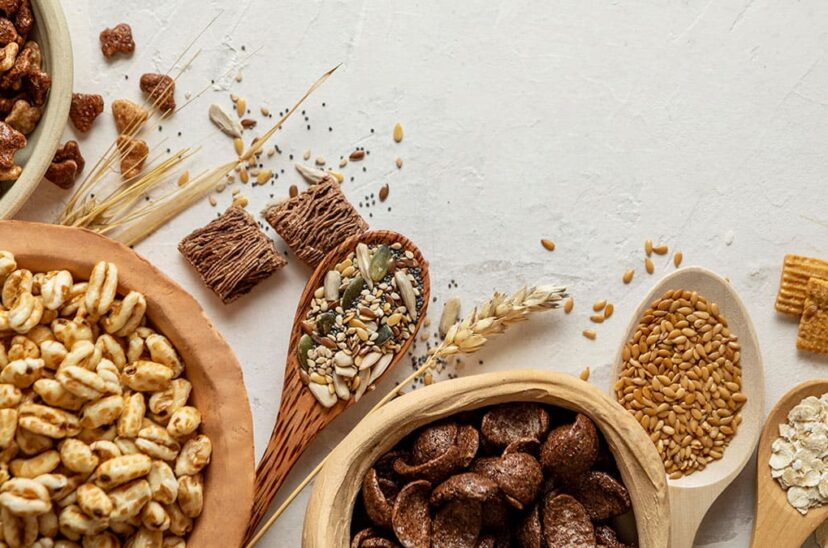

| Tipo de alimento | Ejemplos | Imagenes |
|---|---|---|
| Frutas | Fresas, manzanas, pera, sandía |  |
| Verduras | Jitomate, papa, cebolla, zanahoria | |
| Cereales | Arros, maíz, trigo, cebada, avena |  |
| Leguminosas | Alfafa, chicharo, garbanzo, habas, ejote |  |
| Origen animal | Carnes, huevos, pescados, mariscos |  |
Leche y sus derivados | Leche, crema, yogurt, mantequilla |
Comer sano
Una alimentación saludable nos ayuda a tener un buen estado de salud, a sanar o realizar procesos de recuperación, a combatir enfermedades e infecciones y a evitar enfermedades crónicas degenerativas causadas por la obesidad.
Si bien, todos tenemos necesidades diferentes de nutrición, lo que es igual para todos es tener hábitos de alimentación que favorezcan nuestra salud y la de toda nuestra familia. La preparación de los alimentos debe ser higiénica, es mucho mejor preparar los alimentos en casa y si es posible comer en compañía de la familia o amigos para poder disfrutar ese momento. La dieta debe de ser variada y suficiente. Respecto a esto, en los siguientes blogs te mostraremos cuáles son las porciones adecuadas para comer lo que tu cuerpo necesita.
Debemos aprovechar también los alimentos regionales en donde vivimos y los de cada estación ya que eso también nos ayudará a tener una alimentación variada y económica.Otra cosa importante es incluir en las comidas principales (desayuno, comida, cena) todos los grupos de alimentos, consumiendo más verduras, debido a que nos dan satisfacción y contienen fibra, agua, vitaminas y elementos inorgánicos (minerales).
Recomendaciones de alimentación:
- Elige comer alimentos asados, guisados o a la plancha sin o con poco aceite, evita los alimentos fritos y capeados.
- Evita el exceso de azúcar, grasa y sal. Y también de harinas refinadas.
- Evita consumir productos procesados y ultra procesados ya que estos contienen muchas calorías y tiene ingredientes que pueden dañar tu salud.
https://www.gob.mx/promosalud/es/articulos/que-es-la-alimentacion-saludable?idiom=es